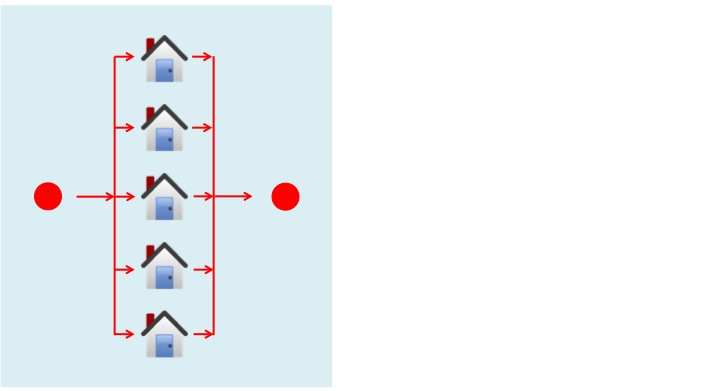
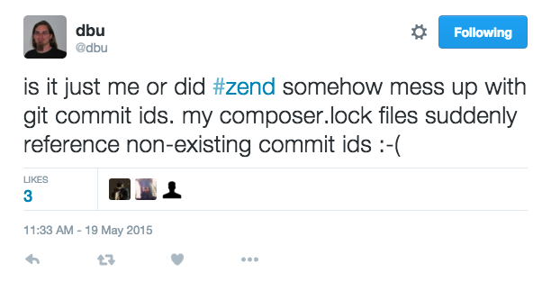

A ZF STORY:
Parallel made easy
Gianluca Arbezzano
Software Engineer at CurrencyFair
OpenSource maintainer

Parallel computing is a type of computation in which many calculations are carried out simultaneously, operating on the principle that large problems can often be divided into smaller ones, which are then solved at the same time. by. wikipedia
Image copyleft Hyde & Rugg, 2014, incorporating house icon from Wikimedia
 Image copyleft Hyde & Rugg, 2014, incorporating house icon from Wikimedia
the builder must check to have enough wheelbarrows, trowels and people
For us it is easier because we have cloud computing.
GreenButton ex. CTO Dave Fellows
Case Study
We worked to split zendframework/zf2 repository and its history in different and independent repositories
Why
- maintainability
- component first
- Remove old split flow based on git subtree
Numbers
- 6 years of git's history
- ~27k commits, 67 releases, and over 700 contributors
- clean checkout is around 150MB
Results
50 repositories
Zend\Http component repository ended up with ~1.7k commits, 50 releases, ~160 contributors, and a clean checkout clocks in at 5.4MB
time
Between 5-12 hours
for each repository
Obvious! Each component could be split easy in parallel because the process doesn't require nothing.
It can leave alone
Made easy because after one email AWS allowed our account to power on 55 EC2 instances
We are worked on two different directions
- A procedure to manipulate the git's history
- A provisioning flow for our servers
Provision tools
PHP and the AWS sdk could work!!
ZF Parallel Split
github.com/gianarb/zf-parallel-splitThis project contains the procedure to boot one server for component and inject the init boot script
return [
"aws" => [
'key' => '',
'secret' => '',
'region' => "us-east-1",
],
"githubToken" => "",
"iam" => [
"name" =>,
],
"keyName" => "gianarb-def",
"bucketBackup" => "zend-split",
"sshPath" => "ssh/",
"components" => [
"Authentication",
"Barcode",
"Cache",
"...",
]
];
$result = $client->runInstances(array(
"ImageId" => "ami-d05e75b8",
"MinCount" => 1,
"MaxCount" => 1,
"InstanceType" => "t2.medium",
"InstanceInitiatedShutdownBehavior" => "terminate",
"KeyName" => $config['keyName'],
"UserData" => base64_encode(render($config, $component)),
'IamInstanceProfile' => array(
'Name' => $config['iam']['name'],
),
));
Launch a t2.medium for each component and create a specific UserData script
#!/bin/bash
RAM_DISK=3000m
mount -t tmpfs -o size=$RAM_DISK tmpfs /root
add-apt-repository -y ppa:git-core/ppa
apt-get update
apt-get install -y python2.7 curl git php5 php5-curl php5-cli
git config --global user.name "Gianluca Arbezzano"
git config --global user.email gianarb92@gmail.com
curl "https://bootstrap.pypa.io/get-pip.py" -o "get-pip.py"
python get-pip.py
pip install awscli
aws s3 cp s3://%sshPath%/id_rsa ~/.ssh/id_rsa
chmod 400 ~/.ssh/id_rsa
aws s3 cp s3://%sshPath%/id_rsa.pub ~/.ssh/id_rsa.pub
echo "Host *
StrictHostKeyChecking no" > ~/.ssh/config
git clone https://github.com/zendframework/component-split.git /root/component-split
cd /root/component-split
./bin/split.sh -c %componentName% -r ./zf2-migrate
cd zf2-migrate
git remote add origin git@github.com:zendframework/zend-%componentName%
git push origin master
git push --tags origin
aws s3 cp /var/log/cloud-init-output.log s3://%bucketBackup%/zend-%componentName%.log
halt
#!/bin/bash
RAM_DISK=3000m
mount -t tmpfs -o size=$RAM_DISK tmpfs /root
add-apt-repository -y ppa:git-core/ppa
apt-get update
apt-get install -y python2.7 curl git php5 php5-curl php5-cli
git config --global user.name "Gianluca Arbezzano"
git config --global user.email gianarb92@gmail.com
curl "https://bootstrap.pypa.io/get-pip.py" -o "get-pip.py"
python get-pip.py
Work in RAM to increase the performance and prepare the environment
pip install awscli
aws s3 cp s3://%sshPath%/id_rsa ~/.ssh/id_rsa
chmod 400 ~/.ssh/id_rsa
aws s3 cp s3://%sshPath%/id_rsa.pub ~/.ssh/id_rsa.pub
Install aws cli tool
echo "Host *
StrictHostKeyChecking no" > ~/.ssh/config
git clone https://github.com/zendframework/component-split.git \
/root/component-split
cd /root/component-split
./bin/split.sh -c %componentName% -r ./zf2-migrate
cd zf2-migrate
git remote add \
origin git@github.com:zendframework/zend-%componentName%
git push origin master
git push --tags origin
Clone the repository with the split procedure, run it and push the new codebase into the component's repository
aws s3 cp /var/log/cloud-init-output.log \
s3://%bucketBackup%/zend-%componentName%.log
halt
move the output on s3
Warning
28€
I know, AWS is expensive!
Thanks
by. @gianarb